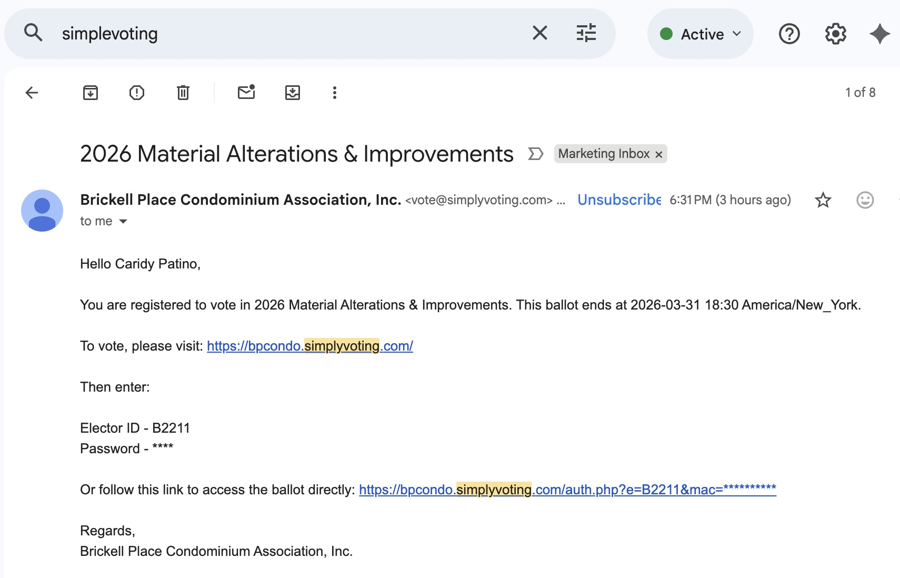

1
Open the SimplyVoting email
Use the direct access link in the email (recommended). If needed, you can also use the site link + Elector ID / Password.

Direct access link (recommended)
Use the direct access link to open the portal immediately (no manual login).